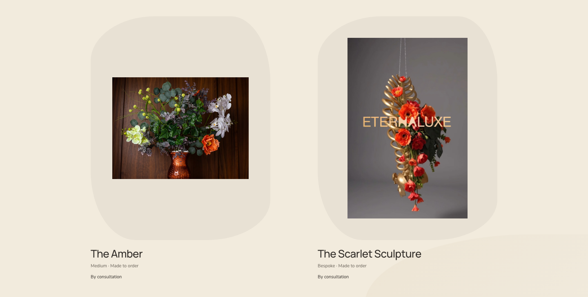
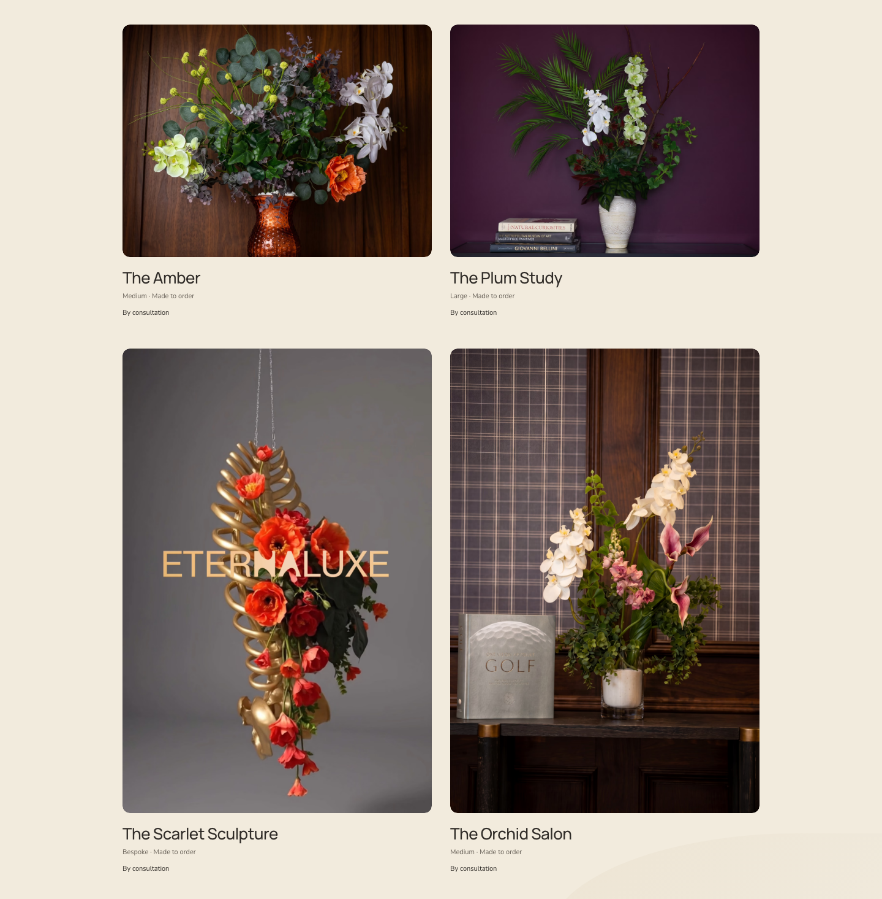
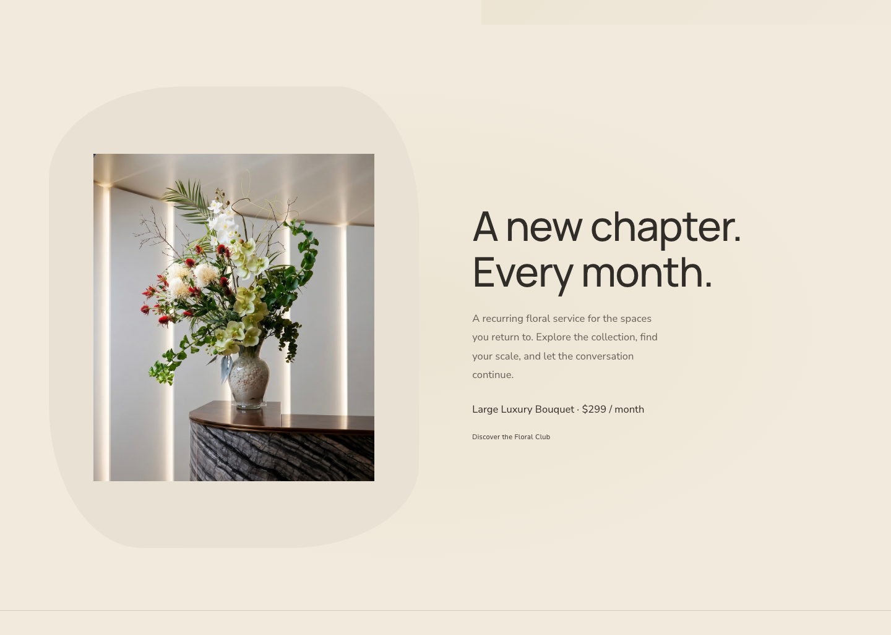
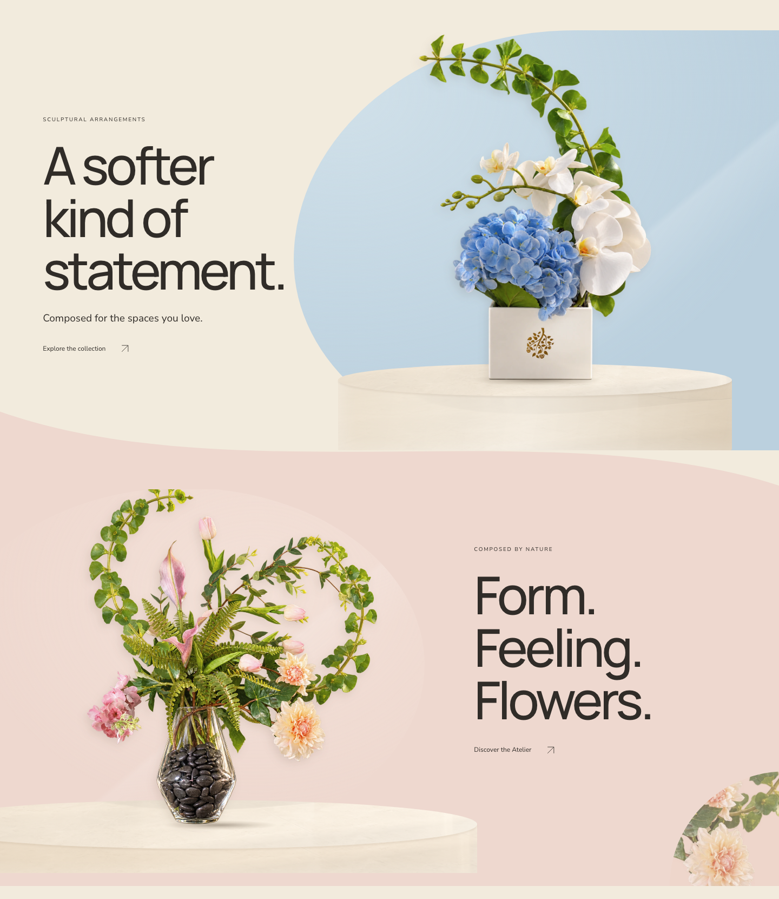
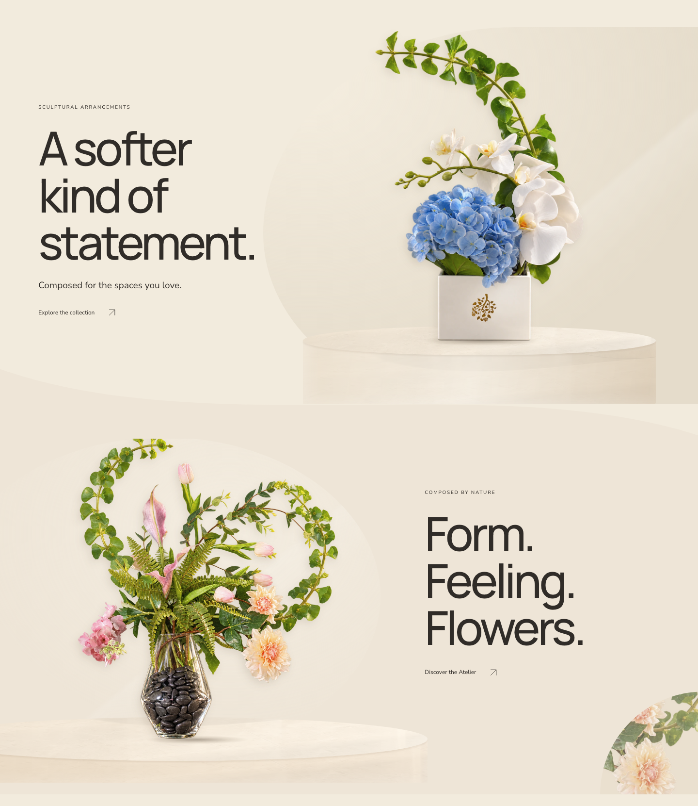

Eternaluxe · revised floral previews
17 November · Local draft only · The live Part 2 website remains unchanged
Collections · actual photographs
Matching companions and rows. No mat or extra frame.


Floral Club · rounded media
Light rounding on the media itself. No oval backing.


Restored scenes · warm neutrals
Original flowers retained; backgrounds match ivory, champagne and stone.

